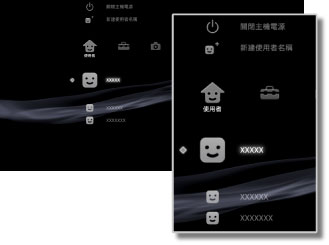

使用者 > 使用者簡介
使用者簡介
可新建PS3™的使用者名稱或關閉PS3™的電源。登錄多數使用者時，可個別管理每位使用者的：PlayStation®3規格軟件的保存資料、選擇 （好友）時傳收的簡訊、選擇
（好友）時傳收的簡訊、選擇 （網路瀏覽介面）時登錄的書籤等。選擇
（網路瀏覽介面）時登錄的書籤等。選擇 （使用者）後，會顯示以下圖示。
（使用者）後，會顯示以下圖示。

 |
關閉主機電源 | 關閉PS3™的電源。 |
|---|---|---|
 |
新建使用者名稱 | 可建立新的使用者名稱。 |
 |
（使用者名稱） | 可對PS3™進行登入。 |
提示
保存於主機儲存空間中的以下類型資料，乃不受使用者的權限影響，且會於每位使用者登入後顯示。刪除後會導致其他使用者亦無法使用。請注意切勿因大意而刪除了重要的資料。
- PlayStation®2 / PlayStation®規格軟件的保存資料
- 顯示於
 （遊戲）類別的遊戲
（遊戲）類別的遊戲 - 顯示於
 （影像）類別的影像檔案
（影像）類別的影像檔案 - 顯示於
 （音樂）類別的音樂檔案
（音樂）類別的音樂檔案 - 顯示於
 （相片）類別的圖像檔案
（相片）類別的圖像檔案 - 顯示於
 （電視／影像服務）類別的圖示
（電視／影像服務）類別的圖示
重要
- 部分PlayStation®2、PlayStation® 規格之軟件可能會於插入PS3™啟動時，出現與以往之PlayStation®2 或PlayStation® 主機不同的動作，或是無法正常啟動的現象。
- 此外，部份PS3™並不支援PlayStation®2規格光碟的播放。詳細請參閱[關於可播放的光碟種類]、各區域的官方網站或主機隨附的使用說明書。